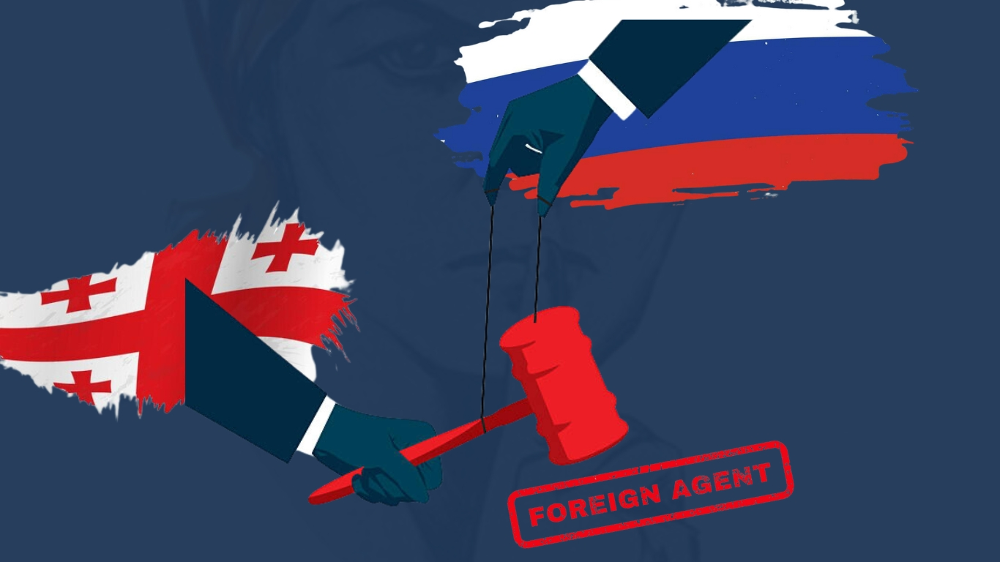

რა მსგავსება და რა განსხვავებაა „რუსულ კანონსა“ და რუსულ კანონს შორის?

2024 წლის 3 აპრილს, ამ მოვლენებიდან დაახლოებით ერთი წლის შემდეგ, „ქართულმა ოცნებამ“ „უცხოური გავლენის გამჭვირვალობის შესახებ“ კანონის პროექტი ხელახლა დააინიიცირა. ახალი ვერსია შინაარსობრივად თითქმის ძველის იდენტურია, განსხვავება მხოლოდ ტერმინშია – „უცხოური გავლენის აგენტი“ „უცხოური ძალის ინტერესების გამტარებელმა ორგანიზაციამ“ შეცვალა. ამ გადაწყვეტილებას როგორც ქვეყნის შიგნით, ის მის ფარგლებს გარეთ მწვავე გამოხმაურება მოჰყვა. არაერთი ევროპული ქვეყანა, დასავლელი პოლიტიკური ლიდერი, საერთაშორისო თუ არასამთავრობო ორგანიზაციის წარმომადგენელი მოუწოდებს საქართველოს ხელისუფლებას, შეინარჩუნოს გაცხადებული საგარეო-პოლიტიკური კურსი და უარი თქვას კანონის მიღებაზე. ევროკავშირის საგარეო და უსაფრთხოების პოლიტიკის პრესსპიკერმა პიტერ სტანომ შეახსენა მმართველ პარტიას, რომ საქართველომ კანდიდატის სტატუსი რეკომენდაციების შესრულების დათქმით მიიღო, რომელთა მიხედვით, სახელმწიფომ უნდა გადადგას ნაბიჯები სამოქალაქო საზოგადოების თავისუფლად მუშაობისა და ევროკავშირისა თუ მისი ღირებულებების წინააღმდეგ მიმართულ დეზინფორმაციასთან ბრძოლის უზრუნველსაყოფად, რაც შეუძლებელი გახდება „უცხოური გავლენის გამჭვირვალობის შესახებ“ კანონის მიღების შემთხვევაში. აშშ-ის სახელმწიფო დეპარტამენტის სპიკერის, მეთიუ მილერის განცხადების თანახმად, ეს კანონპროექტი ძირს უთხრის საქართველოს ერთგულებას ევროატლანტიკური ინტეგრაციისადმი და რისკავს საქართველოს ჩამოშორებას ევროპული გზიდან. კანონპროექტს „რუსული კანონის ასლი“ და მისგან ინსპირაცია უწოდეს აშშ-ის სენატის ჰელსინკის კომისიის თანათავმჯდომარემ ბენ კარდინმა და სენატორმა როჯერ უიკერმა: ეს არის „ევროპული კანდიდატის თვითსაბოტაჟი“ და „მძიმედ მოპოვებული ევროატლანტიკური არჩევანის აშკარა უარყოფა“ – ვკითხულობთ მათ განცხადებაში. ევროკავშირის თორმეტი წევრი სახელმწიფოს პარლამენტების საგარეო ურთიერთობათა კომიტეტების თავმჯდომარეებმა კი ეს კანონპროექტი ქართველი ხალხის ევროპული მისწრაფებების წინააღმდეგ გადადგმულ „მტრულ ნაბიჯად“ შეაფასეს.
ამ დღეებში ბევრი ითქვა და ბევრი დაიწერა იმაზე, თუ რა მსგავსებაა „უცხოელი აგენტების“ შესახებ კანონის ქართულ და რუსულ ვერსიებს შორის, თუმცა ნაკლებს საუბრობენ მათ შორის არსებულ კონტექსტურ განსხვავებებზე, რაც ამ კანონისგან მომდინარე საფრთხეებს კიდევ უფრო ნათლად წარმოაჩენს. ამ ბლოგში გაგიზიარებთ ჩემს დაკვირვებას „რუსული კანონის“ რუსული კანონისგან განმასხვავებელ რამდენიმე მახასიათებელთან დაკავშირებით, რაც, თავის მხრივ, უკეთ დაგვანახებს ამ ორ კანონს შორის არსებულ მსგავსებებს.
კანონის წინაპირობები
საქართველოში, განსაკუთრებით ბოლო წლებში, მმართველი პარტია აქტიურად აწარმოებდა არასამთავრობო ორგანიზაციების წინააღმდეგ მიმართულ საინფორმაციო კამპანიას და ცდილობდა მათი სახელის შებღალვას. „უცხოელი აგენტების“ შესახებ კანონი ამ, ერთი შეხედვით, კარგად გააზრებული პოლიტიკის ლოგიკური გაგრძელება იყო, მაგრამ, ამის მიუხედავად, როგორც შარშან, ისე წელს ქართული საზოგადოების დიდი ნაწილისთვის „რუსული კანონის“ ინიციირება მოულოდნელი აღმოჩნდა და მასობრივი უკმაყოფილება გამოიწვია. მაშინ, როდესაც უნგრეთის მაგალითმაც ცხადყო, რომ „უცხოელი აგენტების შესახებ“ კანონი ევროკავშირის სადამფუძნებლო ხელშეკრულებებს ეწინააღმდეგება და ანტიდასავლური ღირებულებების მატარებელია, საქართველოს ევროინტეგრაციისთვის რუსული კანონის გადმოტანის შედეგები ადვილად პროგნოზირებადი გახდა.
კანონის მიღების ფორმა
რუსეთისაგან განსხვავებით, საქართველოს ხელისუფლებამ გადაწყვიტა ერთი ხისტი მოქმედებით მოეგვარებინა „უცხოელი აგენტების“ „პრობლემა“, გაიზიარა რუსული გამოცდილება და პირდაპირ კანონის სრული ვერსია წარმოადგინა – ჯერ 2023 წლის მარტში, შემდგომ კი, ხელმეორედ, 2024 წლის აპრილში.
კანონის ადრესატები
ქართული კანონპროექტის მიხედვითაც, „უცხოური გავლენის აგენტების“/„უცხოური ძალის ინტერესების გამტარებელი ორგანიზაციების“ ჩამონათვალი საკმაოდ ფართოა და, მცირე გამონაკლისებით, მოიცავს „უცხოური ძალის“ მიერ დაფინანსებულ არასამეწარმეო (არაკომერციულ) იურიდიულ პირებს, მაუწყებლებს, მასობრივი ინფორმაციის ბეჭდური საშუალების (თანა)მფლობელ იურიდიულ პირებს, მასობრივი ინფორმაციის საქართველოს სახელმწიფო ენაზე გამავრცელებელი ინტერნეტსაშუალებისთვის განკუთვნილ ინტერნეტდომენის ან/და ინტენრეტჰოსტინგის (თანა)მფლობელ ან/და (თანა)გამომყენებელ იურიდიულ პირებს. მიზანი ორივე შემთხვევაში ერთია – კრიტიკული აზრის მოსპობა, თუმცა რუსეთში ეს ყველაფერი უფრო დროში გაჭიანურებულად და „უმტკივნეულოდ“ გაკეთდა.
კანონის ადრესატთა საქმიანობის სფერო
ერთი შეხედვით, რუსული კანონმდებლობა ამისგან განსხვავებულია, რადგან მასში შეზღუდულია „უცხოელი აგენტების“ პირთა წრე და კანონი ვრცელდება მხოლოდ ისეთ არაკომერციულ (არასამეწარმეო) იურიდიულ პირებზე, რომლებიც დაკავებული არიან პოლიტიკური საქმიანობით. თუმცა, საქმიანობის ვითომ შეზღუდვის ასეთმა ფორმამ თავის დროზე ვენეციის კომისიის კრიტიკა გამოიწვია, რადგან „პოლიტიკური საქმიანობა“ საკმაოდ ზოგადი ტერმინია და ფართო ინტერპრეტაციის საშუალებას იძლევა. ის თანაბრად შეიძლება შეეხოს აზრს, სიტყვას და მოქმედებას. პრაქტიკამ ნათლად დაამტკიცა გამოთქმული ეჭვების საფუძვლიანობა. საქართველოს მმართველმა პარტიამ კი კიდევ უფრო მარტივად გადაჭრა საკითხი – საერთოდ უგულებელყო საქმიანობის შეზღუდვის შესახებ ჩანაწერის ფორმალობის დაცვა.
. . .
აღნიშნული კანონის მიღების შემთხვევაში საქართველო ვეღარ შეასრულებს ევროკავშირის მიერ კანდიდატის სტატუსთან ერთად გაცემულ რეკომენდაციებს (9 ნაბიჯს), კერძოდ, ვერ უზრუნველყოფს, შექმნას სათანადო გარემო სამოქალაქო საზოგადოების თავისუფლად საქმიანობისთვის (ნაბიჯი 9) და ებრძოლოს ევროკავშირისა და მისი ღირებულებების წინააღმდეგ მიმართულ დეზინფორმაციას (ნაბიჯი 1). შესაბამისად, საქართველო ვერ გახდება ევროკავშირის წევრი სახელმწიფო, რაც ეწინააღმდეგება ქვეყნის მოსახლეობის უმრავლესობის ნებას. არასამთავრობო ორგანიზაციები და მედიასაშუალებები, რომლებიც არ დარეგისტრირდებიან „უცხოური ძალის ინტერესების გამტარებელ“ ორგანიზაციებად შეწყვეტენ საქმიანობას, რეგისტრაციის შემთხვევაში კი ვერ შეძლებენ თავისუფლად და ჯეროვნად ფუნქციონირებას. მაღალი რეპუტაციის მქონე არასამთავრობო და მედია ორგანიზაციების გაქრობით საქართველოს მოსახლეობა, ერთი მხრივ, დაკარგავს წვდომას იმ სარგებელზე, რომელსაც აქამდე უცხოური დონორების ხელშეწყობით იღებდა (უფასო სერვისები, საგანმანათლებლო პროგრამები, მცირე გრანტები, …), მეორე მხრივ კი, ვეღარ მიიღებს ინფორმაციას აქტუალურ პოლიტიკურ, ეკონომიკურ თუ სოციალურ საკითხებზე. ყოველივე ეს, საბოლოო ჯამში, მნიშვნელოვნად გააუარესებს ადამიანის უფლებების დაცვის ხარისხსა და ქვეყნის დემოკრატიულობის დონეს. ამ პროცესის შემდეგი ნაბიჯი კი, სავარაუდოდ, კანონის ფიზიკურ პირებზე გავრცელება და ინდივიდების „აგენტებად“ გამოცხადება იქნება, როგორც ეს თავის დროზე რუსეთში მოხდა.